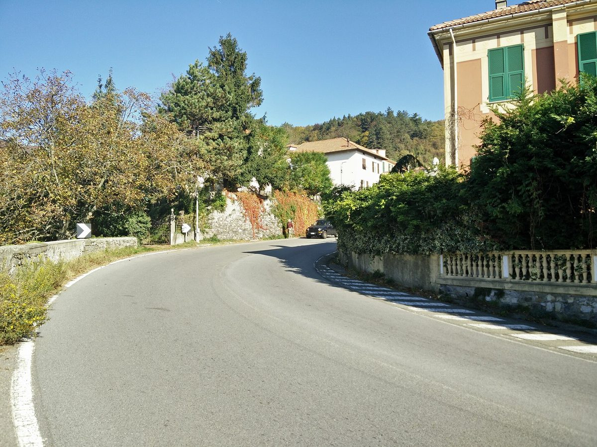

이탈리아 발레 스크리비아 연금생활자 노조, '재생에너지공동체(CER) 추진위원회' 결성 제안…산간 인구 감소·요금 부담 대응

Spi Cgil 제노바·리구리아, 11월 5일 부살라서 공개 토론회…시민·기업·지자체 묶어 CER 퍼뜨리는 구상, 위원회는 아직 제안 단계
이탈리아 최대 노총 CGIL의 연금생활자 노조인 Spi Cgil 제노바·리구리아가 11월 5일 제노바 내륙 발레 스크리비아(Valle Scrivia)의 부살라(Busalla)에서 공개 토론회를 열고, 이 지역에 'CER 추진위원회(Comitato Pro CER)'를 만들자고 제안했다. 노조는 시민·기업·지자체를 한데 엮어 재생에너지공동체(CER)를 퍼뜨리고 인구가 빠져나가는 산간 지역의 회복력을 키우는 수단으로 위원회를 구상하고 있으며, 공공기관이 알맞은 부지 찾기와 절차 간소화, 참여하려는 시민 안내를 함께 맡아야 한다고 요구했다. 노조 측 귀도 파시오(Guido Fassio)는 최근 두 달 사이 전기요금이 22% 올라 취약한 연금생활자의 살림까지 압박하고 있다고 주장했다. 토론회에는 기상학자 루카 메르칼리(Luca Mercalli)와 일라리아 보초(Ilaria Bozzo) 제노바 광역시 의원, 지역 CER 단체 관계자, 태양광 사업가, 학생들이 참석했고, 보초 의원은 내륙의 작은 지자체가 전환의 주인공이 돼야 하며 발레 스크리비아가 그 시험대로 알맞다고 말했다. 메르칼리는 해외 화석연료에 기대는 처지에서 벗어나려면 발코니에서도 태양광을 달 수 있고 건물 단열도 함께 고쳐야 한다고 했고, Spi 전국 조직의 로셀라 무로니(Rossella Muroni)는 어느 계곡·지자체·도시에서든 되풀이할 수 있는 시도라고 평가했다. 제안된 위원회의 참여 규모와 설비, 예산은 알려지지 않았다.
시민에너지 관점
이탈리아는 재생에너지공동체에 인센티브를 주는 제도를 갖추고도 실제 가동이 더디다는 지적을 받아 왔는데, 노조처럼 이미 지역에 뿌리내린 조직이 주민을 모으고 지자체를 움직이겠다고 나선 것은 그 빈틈을 메울 실마리가 될 수 있다. 나이 든 주민이 많은 산간 마을에서 누가 공동체를 꾸리고 운영하겠느냐는 걱정이 있지만, 연금생활자 노조가 다음 세대에 물려줄 환경에 책임을 지겠다며 앞장선 이번 제안은 고령층이 전환의 짐이 아니라 주체가 될 수 있음을 보여 준다. 요금이 오를 때 가장 먼저 타격을 받는 이들이 직접 발전 설비의 주인이 돼야 지역에서 번 돈이 지역에 남는다. 인구 감소를 겪는 우리 농산촌에서도 노인회·농협·사회적경제 조직이 함께 마을 단위 시민발전을 꾸릴 수 있도록 지자체가 부지와 행정 지원을 먼저 내놓아야 한다.
출처: La Voce di Genova 2026-11-05 I.R. 원문 보기
창간 전 시험 발행 기사입니다.
イタリア・ヴァッレ・スクリーヴィアの年金生活者労組、「再生可能エネルギー共同体（CER）推進委員会」の結成を提案…山間部の人口減少・料金負担に対応
Spi Cgilジェノヴァ・リグーリア、11月5日にブザッラで公開討論会…市民・企業・自治体を束ねてCERを広げる構想、委員会はまだ提案の段階
イタリア最大の労働組合総連合CGILの年金生活者労組Spi Cgilジェノヴァ・リグーリアは11月5日、ジェノヴァ内陸部ヴァッレ・スクリーヴィア（Valle Scrivia）のブザッラ（Busalla）で公開討論会を開き、この地域に「CER推進委員会（Comitato Pro CER）」をつくろうと提案した。労組は市民・企業・自治体を一つに結び、再生可能エネルギー共同体（CER）を広げて、人口が流出する山間地域の回復力を高める手段として委員会を構想しており、公的機関が適した用地探しや手続きの簡素化、参加を望む市民への案内をともに担うよう求めた。労組側のグイド・ファッシオ（Guido Fassio）氏は、ここ2か月で電気料金が22%上がり、弱い立場の年金生活者の暮らしまで圧迫していると主張した。討論会には気象学者のルカ・メルカッリ（Luca Mercalli）氏、イラリア・ボッツォ（Ilaria Bozzo）ジェノヴァ大都市圏議員、地域のCER団体の関係者、太陽光事業者、学生らが参加し、ボッツォ議員は内陸の小さな自治体こそが移行の主役になるべきで、ヴァッレ・スクリーヴィアはその試金石にふさわしいと述べた。メルカッリ氏は、海外の化石燃料に頼る状況から抜け出すにはベランダでも太陽光を設置でき、建物の断熱もあわせて改善すべきだと語り、Spi全国組織のロッセッラ・ムローニ（Rossella Muroni）氏は、どの谷・自治体・都市でも繰り返せる試みだと評価した。提案された委員会の参加規模や設備、予算は明らかになっていない。
市民エネルギーの視点
イタリアは再生可能エネルギー共同体にインセンティブを出す制度を整えながらも、実際の稼働は遅れていると指摘されてきたが、労組のようにすでに地域に根を張った組織が住民を集め自治体を動かそうと乗り出したことは、その隙間を埋める糸口になりうる。高齢の住民が多い山間の集落で誰が共同体をつくり運営するのかという懸念もあるが、年金生活者の労組が次の世代に引き継ぐ環境に責任を持つとして先頭に立った今回の提案は、高齢層が移行の重荷ではなく担い手になりうることを示している。料金が上がるとき真っ先に打撃を受ける人たちが自ら発電設備の持ち主になってこそ、地域で生まれたお金が地域に残る。人口減少に直面する韓国の農山村でも、老人会や農協、社会的経済の組織がともに集落単位の市民発電を担えるよう、自治体がまず用地と行政の支援を差し出すべきだ。
出典: ラ・ヴォーチェ・ディ・ジェノヴァ（La Voce di Genova） 2026-11-05 I.R. 原文を読む
創刊前の試験発行記事です。
意大利斯克里维亚谷退休人员工会提议成立"可再生能源社区（CER）推进委员会"…应对山区人口减少和电费负担
Spi Cgil热那亚·利古里亚11月5日在布萨拉举行公开讨论会…设想联合市民、企业和地方政府推广CER，委员会尚处于提议阶段
意大利最大工会联合会CGIL旗下的退休人员工会Spi Cgil热那亚·利古里亚分会，11月5日在热那亚内陆斯克里维亚谷（Valle Scrivia）的布萨拉（Busalla）举行公开讨论会，提议在当地成立"CER推进委员会（Comitato Pro CER）"。工会设想把这个委员会作为联合市民、企业和地方政府、推广可再生能源社区（CER）、增强人口外流山区韧性的工具，并要求公共机构共同承担寻找合适场地、简化手续和指导有意参与的市民等工作。工会方面的圭多·法西奥（Guido Fassio）声称，最近两个月电费上涨了22%，连处境脆弱的退休人员的生活也受到挤压。气象学家卢卡·梅尔卡利（Luca Mercalli）、热那亚大都市区议员伊拉里亚·博佐（Ilaria Bozzo）、当地CER团体人士、光伏企业主和学生出席了讨论会；博佐表示，内陆的小市镇应成为能源转型的主角，斯克里维亚谷很适合作为试点。梅尔卡利说，要摆脱对国外化石燃料的依赖，阳台上也可以装光伏，同时还要改善建筑保温；Spi全国组织的罗塞拉·穆罗尼（Rossella Muroni）则评价说，这是在任何山谷、市镇和城市都可以复制的尝试。拟议委员会的参与规模、设施和预算尚未公布。
市民能源视角
意大利虽已建立对可再生能源社区给予激励的制度，但实际投运一直被指进展缓慢；像工会这样早已扎根地方的组织站出来召集居民、推动地方政府，有望成为填补这一空白的突破口。有人担心在老年居民众多的山村，谁来组建和运营社区，但退休人员工会以对留给下一代的环境负责为由带头提出这一倡议，表明老年群体不是转型的包袱，而可以成为转型的主体。电价上涨时首当其冲的人亲自成为发电设施的主人，在当地赚到的钱才能留在当地。在面临人口减少的韩国农山村，地方政府也应率先提供场地和行政支持，让老人会、农协和社会经济组织能够共同开展以村为单位的市民发电。
来源: 热那亚之声（La Voce di Genova） 2026-11-05 I.R. 查看原文
本文为创刊前试发行文章。
Pensioners' union in Italy's Valle Scrivia proposes a 'Pro CER Committee' to spread renewable energy communities, citing depopulation and rising bills
Spi Cgil Genoa-Liguria held a public debate in Busalla on November 5 on linking citizens, businesses and municipalities to spread CERs; the committee is still only a proposal
Spi Cgil Genoa-Liguria, the pensioners' union of Italy's largest trade union confederation CGIL, held a public debate in Busalla in the Valle Scrivia, inland from Genoa, on November 5 and proposed setting up a 'Pro CER Committee' (Comitato Pro CER) for the area. The union sees the committee as a way to bring citizens, businesses and municipalities together to spread renewable energy communities (CERs) and strengthen the resilience of a mountain area losing its population, and it called on public bodies to help find suitable sites, simplify procedures and guide citizens who want to take part. Guido Fassio, speaking for the union, claimed that electricity bills have risen 22% in the past two months, squeezing even vulnerable pensioners. Meteorologist Luca Mercalli, Genoa metropolitan councillor Ilaria Bozzo, representatives of local CER groups, a solar entrepreneur and students attended, and Bozzo said small inland municipalities should lead the transition and that the Valle Scrivia is a good place to test it. Mercalli said that breaking dependence on imported fossil fuels can start with solar panels even on balconies, together with better building insulation, and Rossella Muroni of the national Spi called it an initiative that can be repeated in any valley, municipality or city. The size, installations and budget of the proposed committee have not been made public.
Citizen Energy View
Italy has an incentive scheme for renewable energy communities, yet take-up has been criticised as slow, and an organisation already rooted locally, such as a union, stepping forward to gather residents and move municipalities could help close that gap. Some will ask who in an ageing mountain village will organise and run a community, but a pensioners' union taking the lead out of responsibility for the environment it hands to the next generation shows that older people can drive the transition rather than burden it. When those hit first by rising bills become owners of generating equipment themselves, the money earned locally stays local. In Korea's shrinking rural and mountain communities, too, local governments should be first to offer sites and administrative support so that senior citizens' associations, agricultural cooperatives and social economy organisations can jointly run village-scale citizen power projects.
Source: La Voce di Genova 2026-11-05 I.R. Read the original
This article was published during the trial period before launch.